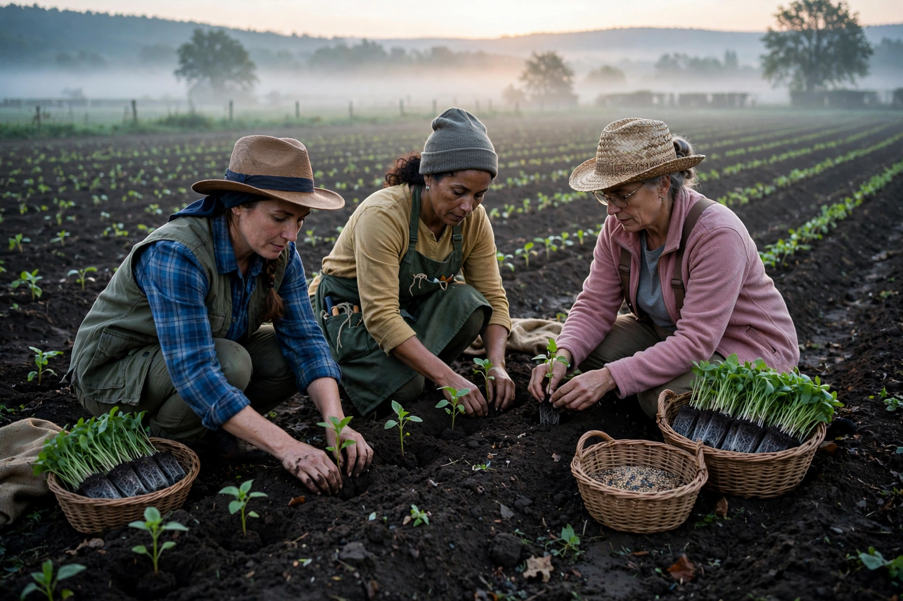

From Wikipedia, the free encyclopedia
| Ecofeminism | |
|---|---|
| Type | Philosophical and activist movement |
| Term coined | Françoise d'Eaubonne, Le Féminisme ou la mort (1974) |
| Core claim | The domination of women and the domination of nature are historically and conceptually linked |
| Key figures | d'Eaubonne, Val Plumwood, Karen Warren, Vandana Shiva, Ariel Salleh, Ynestra King |

Ecofeminism is a philosophical and activist movement holding that the exploitation of nature and the oppression of women are interconnected — products of the same patriarchal structures of thought and power — so that neither can be ended alone. The term was coined by the French writer Françoise d'Eaubonne in Le Féminisme ou la mort (1974). Ecofeminists argue that Western thought's ruling dualisms — culture/nature, reason/body, male/female, human/animal — map onto and reinforce one another, valuing the first term and subordinating the second, and that an adequate environmental philosophy must therefore be a feminist one.
The movement flowered in the late 1970s and 1980s through conferences, the Women's Pentagon Actions, and works such as Susan Griffin's Woman and Nature (1978) and Carolyn Merchant's The Death of Nature (1980), which traced how the Scientific Revolution recast nature from living mother to dead machine available for dissection. Karen Warren systematised ecofeminist philosophy: an "oppressive conceptual framework" of value-hierarchical thinking, dualisms and a logic of domination links the unjustified subordination of women and of nature. Val Plumwood's Feminism and the Mastery of Nature (1993) gave the critique its sharpest philosophical form, dissecting the "master model" of the rational subject defined against body, nature, women, animals and colonised peoples.
Ecofeminism is plural: materialist and socialist ecofeminists (Ariel Salleh's "embodied materialism"; Vandana Shiva's accounts of Indian women's defence of forests and seeds, from the Chipko movement onward) ground it in labour and livelihood; cultural and spiritual ecofeminists affirm women's closeness to nature as a source of value; critics within feminism reply that identifying women with nature risks re-inscribing the very dualism under attack, and that the women–nature link must be understood as historically constructed, not essential. Ecofeminist critiques of deep ecology — that its expanded Self can swallow the difference feminism insists on — reshaped environmental philosophy, as have its contributions to animal ethics (the feminist care tradition in animal philosophy) and to climate justice.
Environmental ethics · Feminist philosophy · Deep ecology · Feminism · Philosophy